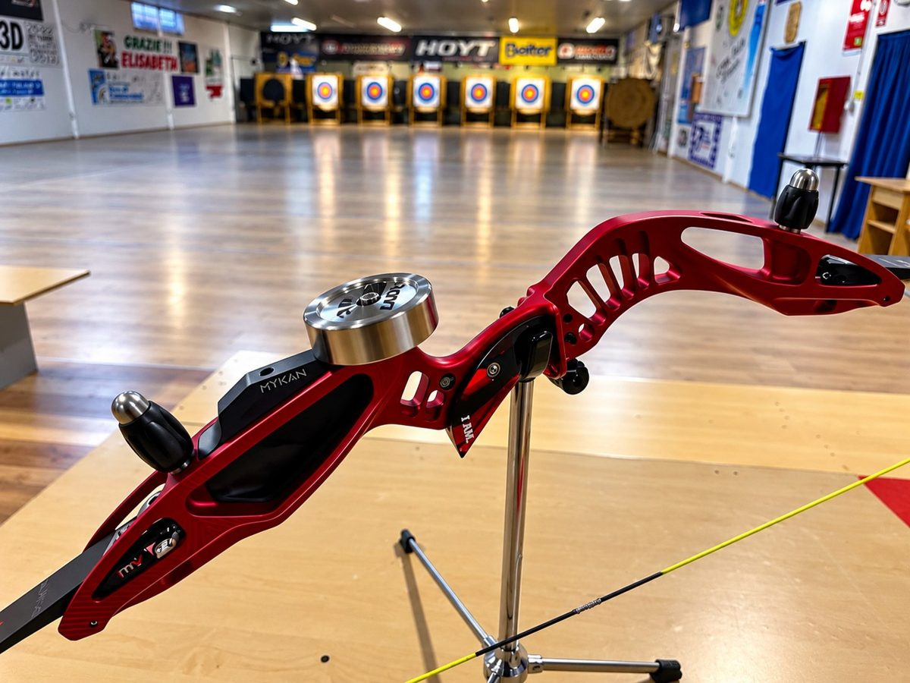

Archery Lab

IL TUO SETUP. I TUOI DATI.Non tirare a indovinare.
Capisci la tua freccia.
Uno spazio dedicato a chi vuole capire cosa succede tra arco, corda e bersaglio. Dati, prove e strumenti pratici per trasformare le sensazioni in scelte più consapevoli.
Strumenti per leggere meglio ogni tiro.
Il portale parte dalle misure della freccia e si allarga con strumenti di accordatura, test pratici e guide per interpretare quello che succede sul bersaglio.
Peso, baricentro & FOC
Componi la tua freccia, calcola il peso totale e visualizza dove si trova il baricentro. Il FOC si aggiorna mentre modifichi i componenti.
Apri il calcolatoreSpennata Lab
Confronta i gruppi impennati e spennati, misura lo scostamento dei baricentri e segui una lettura guidata dei risultati.
Apri Spennata LabMisura. Confronta. Verifica.
Un metodo semplice: registra i dati, interpreta le differenze e verifica una modifica alla volta.
Inizia dai tuoi dati- 1
Registra
Annota setup, distanza, condizioni e risultati.
- 2
Interpreta
Confronta le differenze senza fermarti alla singola freccia.
- 3
Verifica
Modifica un parametro, ripeti il test e controlla se il gruppo migliora.
L'attrezzatura che utilizzo
Tre marchi che fanno parte della mia esperienza nel tiro con l'arco.